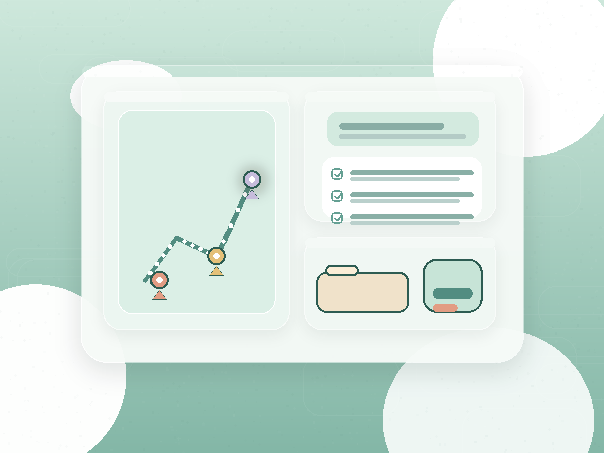
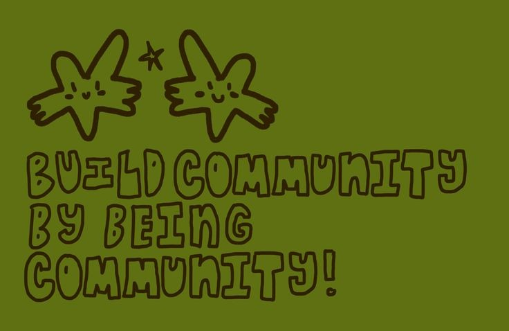

Human layer
The network behind every resolved need.
KindredPune is not just the map. It is the field worker with a routing sheet, the volunteer who finally gets a good match, and the partner team that can see the same city from different roles.
Who it supports
Designed around the people doing the work
Different roles need different surfaces, but they all need calm, legible coordination that respects real field conditions.

NGO Worker
Opens the day with a route that reflects live ward pressure, pending call-backs, and which volunteers can actually help.
Volunteer
Gets matched to tasks that fit distance, timing, and skill, which turns goodwill into useful coverage.
CSR Partner
Sees where support closes real gaps and how contributions change coverage on the ground over time.
Voices from the field
Notes that sound like the city, not a report
Field stories stay close to the interface so the system never drifts into abstraction.
"I can see the next call before I leave the lane."
Routing is now grouped by neighborhood and urgency, so less time disappears between one household and the next.
Prerna · outreach worker
"Volunteer matching finally feels respectful of our time."
Evening shifts surface nearby first, and the system does not push us into roles we are not ready for.
Yusuf · community volunteer
"The city desk now feels shared, not separate."
NGO desks are no longer operating from fragments. We begin the day from the same civic picture.
Radhika · network coordinator

How people fit
The civic network is choreographed, not improvised
The system shows where people can step in, who they are stepping in with, and what kind of support is needed next.
Volunteer matching
Distance, time window, and training turn loose availability into credible support.
- Food distribution12 matched
- Water support6 on standby
- Call-back desk8 remote-ready
NGO coordination
Workloads stay visible, which helps teams support one another before pressure spills into missed follow-ups.
Community confidence
Local voices are logged as signals and treated as useful intelligence, not side comments.
Shared reporting
The same system that helps field teams also shows supporters what changed because they showed up.
Next layer
When people are visible, impact becomes easier to trust.
See how the civic network turns into real coverage, resolution, and reporting across Pune.